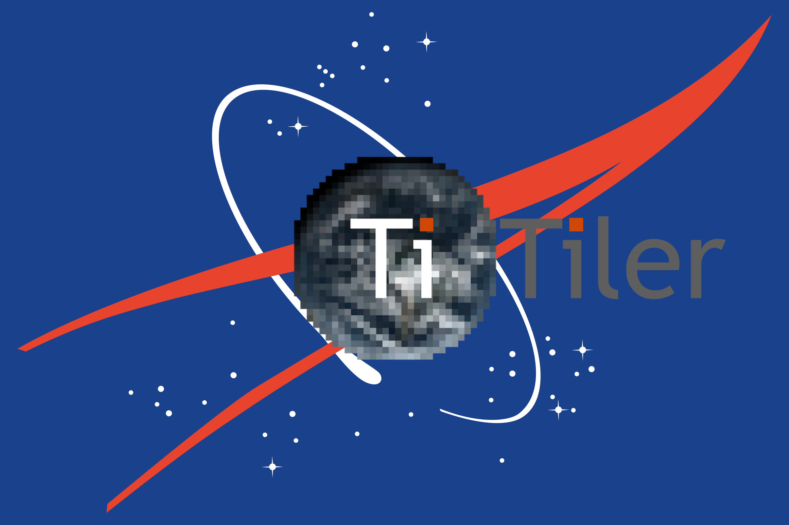

A modern dynamic tile server with a NASA CMR backend built on top of FastAPI and Rasterio/GDAL.


titiler-cmr¶
An API for creating image tiles from CMR queries.
See also the API documentation.
Features¶
- Render tiles from assets discovered via queries to NASA's CMR
- Two backends: xarray (
/xarray) for NetCDF/HDF5 datasets and rasterio (/rasterio) for GeoTIFF/COG assets - Timeseries endpoints for generating GIFs, statistics, and tilejsons across a temporal range
- Queries CMR directly via the granule search API
- Built on top of titiler
- Multiple projections support (see TileMatrixSets) via
morecantile. - JPEG / JP2 / PNG / WEBP / GTIFF / NumpyTile output format support
- Automatic OpenAPI documentation (FastAPI builtin)
- Example of AWS Lambda / ECS deployment (via CDK)
Installation¶
To install from sources and run for development, install uv then:
git clone https://github.com/developmentseed/titiler-cmr.git
cd titiler-cmr
uv sync --all-extras
Authentication for data read access¶
titiler-cmr can read data either over HTTP (external) or directly from AWS S3 (direct) depending on the app configuration.
The behavior is controlled by environment variables (or a .env file) read by EarthdataSettings and ApiSettings in settings.py.
Direct from S3¶
When running in an AWS context (e.g., Lambda), you should configure the
application to access the data directly from S3. You can do this in two ways:
- Option 1: Configure an AWS IAM role for your runtime environment that has
read access to the NASA buckets so that
rasterio/GDALcan find the AWS credentials when reading data. - Option 2: Set the
TITILER_CMR_EARTHDATA_USERNAME,TITILER_CMR_EARTHDATA_PASSWORD, andTITILER_CMR_EARTHDATA_S3_DIRECT_ACCESS=trueenvironment variables so that temporary AWS credentials can be retrieved for reading from the relevant NASA buckets.
Important
Direct S3 access configuration will only work if the application is running in the same AWS region as the data are stored!
Note
To avoid placing heavy load on the endpoints that issue temporary AWS (S3) credentials, and to improve Lambda performance, such credentials are fetched only when necessary, and are held in a cache (keyed by the endpoint URL), and are automatically refreshed 5 minutes prior to their expiration (as a freshness leeway).
However, this caching occurs on a per-Lambda basis. That is, each Lambda function maintains its own cache, so the load on the credentials enpoints is still greater than necessary. Each Lambda must repopulate its cache upon cold start (but the cache is maintained across warm starts).
Therefore, we plan to explore the use of a distributed cache to be shared across all Lambda instances to not only absolutely minimize our load on the endpoints, but also to improve overall Lambda performance by avoiding having every Lambda fetch credentials for the same endpoints. Further, a distributed cache would be unaffected by Lambda cold starts, so even a cold-starting Lambda would avoid the need to fetch credentials that are already in the cache.
External access¶
When running outside of the AWS context (e.g. locally) you will need to configure the application to access data over HTTP.
You can do this by creating an Earthdata account, configuring your .netrc file with your Earthdata login credentials (which GDAL will find when trying to access data over the network), and setting a few environment variables:
# environment variables for GDAL to read data from NASA over HTTP
export GDAL_DISABLE_READDIR_ON_OPEN=YES
export CPL_VSIL_CURL_USE_HEAD=FALSE
export GDAL_HTTP_COOKIEFILE=/tmp/cookies.txt
export GDAL_HTTP_COOKIEJAR=/tmp/cookies.txt
export EARTHDATA_USERNAME={your earthdata username}
export EARTHDATA_PASSWORD={your earthdata password}
# write your .netrc file to the home directory
echo "machine urs.earthdata.nasa.gov login ${EARTHDATA_USERNAME} password ${EARTHDATA_PASSWORD}" > ~/.netrc
Note
See NASA's docs for details
Docker deployment¶
You can run the application in a docker container using the docker-compose.yml
file. The docker container is configured to use secrets for your Earthdata Login
credentials, so make sure the secrets exist by first running the following
script:
uv run scripts/write-secrets.py
The script will look for your Earthdata Login credentials in the following places, in descending order of precedence:
- Exported
EARTHDATA_USERNAMEandEARTHDATA_PASSWORDenvironment variables - A
.env.secretsfile - A
.envfile - A netrc file (defaults to
~/.netrc, but can be set viaNETRCenvironment variable) - As a last resort, prompts for input
If you ever change your credentials, rerun the script to repopulate the secrets. Once the secrets are generated, you can start the application as follows:
docker compose up --build
The application will be available at this address: http://localhost:8081/api.html
Local deployment¶
To run the application directly in your local environment, configure the application to access data over HTTP then run it using uvicorn:
uv run uvicorn titiler.cmr.main:app --reload --log-level info
The application will be available at this address: http://localhost:8000/api.html
Deployment to AWS via veda-deploy¶
Deployment to AWS is currently triggered using veda-deploy. veda-deploy checks out this repo as a submodule and then executes .github/actions/cdk-deploy/action.yml (see also: veda-deploy/.github/workflows/deploy.yml). For more details, please review the veda-deploy README section on adding new components.
Environment Variables¶
Environment variables for the veda-deploy deployment should be configured in the veda-deploy environment-specific AWS Secret. See also these instructions. The variables in the AWS Secret will be written to an .env file and used by the CDK deployment as instantiated by the AppSettings and StackSettings defined infrastructure/aws/cdk/config.py. StackSettings are those specific to the specific stage being deployed, may only be used during deployment, and are more likely to be shared across VEDA services. AppSettings are settings specific to titiler-cmr and are used to set the lambda runtime environment variables.
The application-specific (AppSettings) environment variables which should be set in the veda-deploy AWS secret are:
TITILER_CMR_EARTHDATA_S3_DIRECT_ACCESS=trueTITILER_CMR_ROOT_PATH=/api/titiler-cmrTITILER_CMR_AWS_REQUEST_PAYER=requester
Deployment to a development/test instance¶
You can trigger a deploy to a "dev" stack (cloudformation stack name should be titiler-cmr-dev) in the VEDA SMCE account by labeling a PR with the "deploy-dev" tag. This stack is intended for testing new features.
Contribution & Development¶
See CONTRIBUTING.md
License¶
See LICENSE
Authors¶
Created by Development Seed
See contributors for a listing of individual contributors.
Changes¶
See CHANGELOG.md.